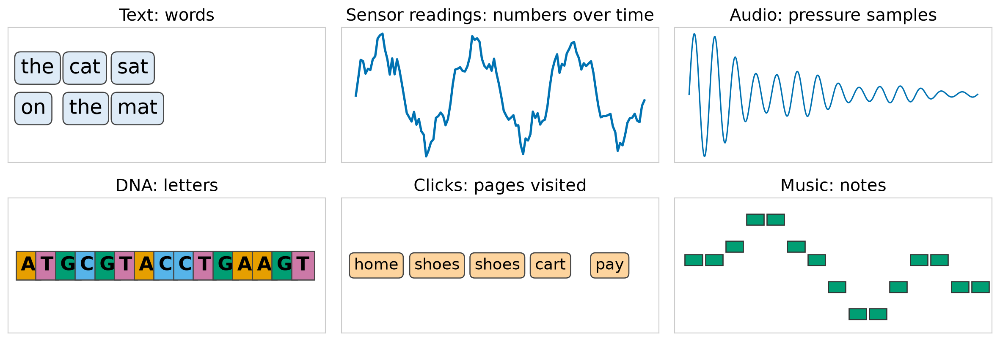
Advanced Machine Learning
This slide deck is still under active development. Expect changes before it is finalized.
Order is data

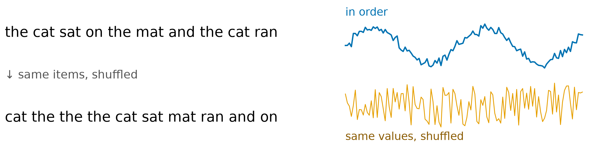
Numbers
Symbols
The rest of this lecture is about symbols, and text is our main example
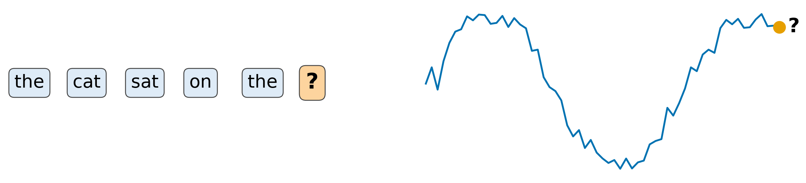
Predict each item from the ones before it, using the same model at every position.
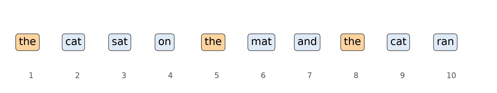
A sequence is data where order matters, and the basic task is to predict the next item from the ones before it.
A model only sees numbers
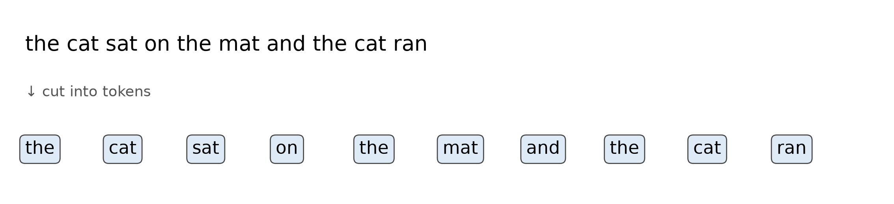
| Token | the | cat | sat | on | mat | and | ran |
|---|---|---|---|---|---|---|---|
| Id | 0 | 1 | 2 | 3 | 4 | 5 | 6 |
| Count | 3 | 2 | 1 | 1 | 1 | 1 | 1 |
| Token | What it is for |
|---|---|
<unk> |
Not in the vocabulary: rare or new words |
<pad> |
Filler, so a batch has one length |
<bos>, <eos> |
Start and end of a sequence |
<s> and </s>, [CLS] and [SEP]), the roles do not<bos> the cat sat on the mat and the cat ran <eos>, 12 tokens| Choice | Before | After | What is lost |
|---|---|---|---|
| Lowercase everything | The cat and the cat |
the cat |
Which word began a sentence |
| Drop punctuation | Stop. Go! |
stop go |
Where sentences end |
| Keep only common words | a quokka sat |
a <unk> sat |
The rare word itself |
| Token | Vocabulary size | Sequence length for our sentence |
|---|---|---|
| Characters | 12 | 38 |
| Words | 7 | 10 |
| Pieces of words | in between | in between |
un + happi + ness. Real systems use theseTurning a sequence into tokens decides what the model can see and how long its sequences are.
Simple ways to turn tokens into vectors
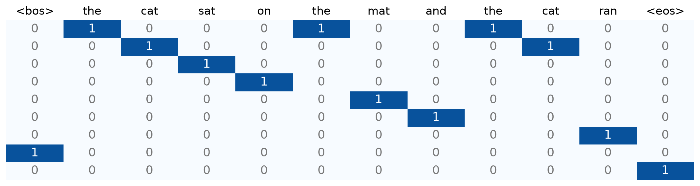
| Text | the | cat | sat | on | mat | and | ran |
|---|---|---|---|---|---|---|---|
| the cat sat on the mat | 2 | 1 | 1 | 1 | 1 | 0 | 0 |
| the mat sat on the cat | 2 | 1 | 1 | 1 | 1 | 0 | 0 |
| the cat ran | 1 | 1 | 0 | 0 | 0 | 0 | 1 |
No sense of similarity
No sense of context
Both are fine for some jobs, and neither gives the vectors we want: ones where closeness means something
Learn the vectors
“You shall know a word by the company it keeps.”
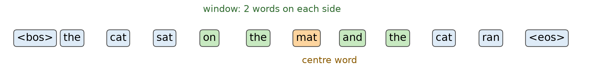
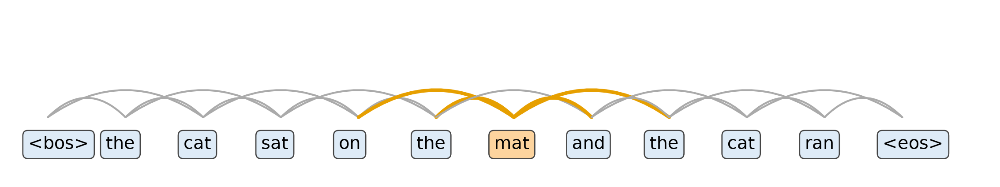
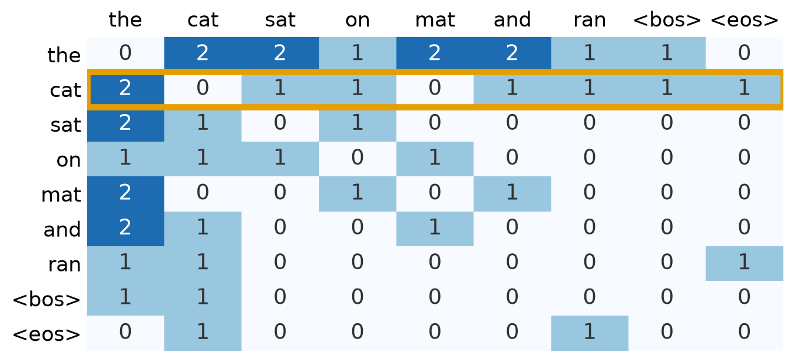
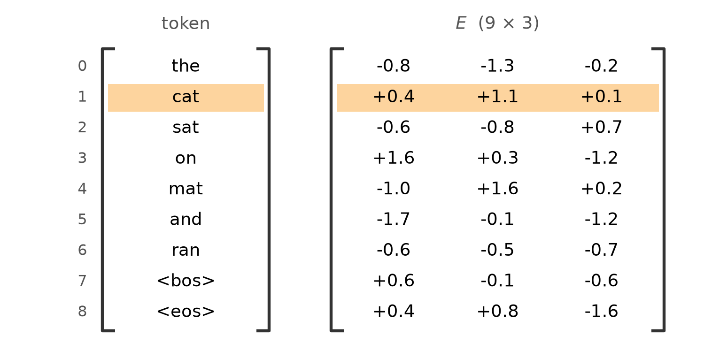
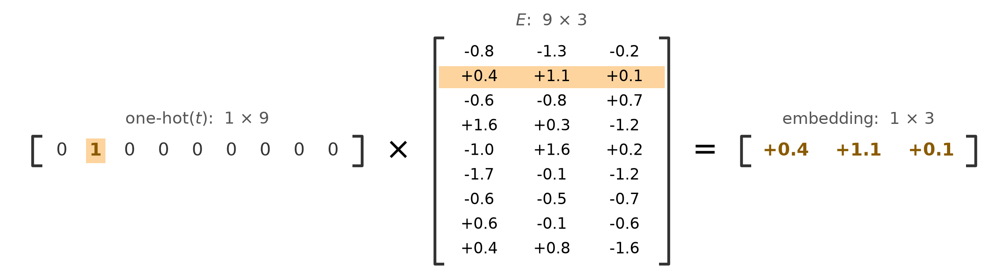
import torch
from torch import nn
emb = nn.Embedding(num_embeddings=9, embedding_dim=3) # the table E: 9 tokens, 3 dimensions
ids = torch.tensor([[ID[w] for w in SEQ]]) # (batch, length) = (1, 12)
out = emb(ids) # (batch, length, dim)
print(ids.shape, "->", out.shape)
onehot = nn.functional.one_hot(ids, 9).float() # (1, 12, 9)
print(torch.allclose(onehot @ emb.weight, out)) # a lookup equals one-hot times the tabletorch.Size([1, 12]) -> torch.Size([1, 12, 3])
Trueemb.weight is the table, an ordinary parameter that backpropagation updatesInside a task
On neighbours alone
Either way: start from random rows, compute a loss, and backpropagation moves the rows of the table
One training example is a centre word with vector \mathbf{u}, one real neighbour \mathbf{v}, and a few random words \mathbf{v_n}.
\text{loss} = \underbrace{-\log \sigma(\mathbf{u} \cdot \mathbf{v})}_{\text{real neighbour}} \;\underbrace{-\sum_n \log \sigma(-\mathbf{u} \cdot \mathbf{v_n})}_{\text{random words}}
| Piece | What it is |
|---|---|
| \mathbf{u} | The centre word’s vector: its row of the table |
| \mathbf{v} | A real neighbour’s vector: a word inside the centre word’s window |
| \mathbf{v_n} | A random word’s vector, drawn from the vocabulary. A few per example, so the sum |
| \mathbf{u} \cdot \mathbf{v} | The score for the pair, read through \sigma as a probability that they are neighbours |
| -\log \sigma(\mathbf{u} \cdot \mathbf{v}) | Real-neighbour term: small when the real pair scores high |
| -\log \sigma(-\mathbf{u} \cdot \mathbf{v_n}) | Random-word term: the minus sign inside flips it, so it is small when the random word scores low |
| Pair | Dot product | The term with the number in | Loss |
|---|---|---|---|
| Real neighbour, score high | +2 | -\log \sigma(2) | 0.13 |
| Real neighbour, score low | -2 | -\log \sigma(-2) | 2.13 |
| Random word, score low | -2 | -\log \sigma(2) | 0.13 |
| Random word, score high | +2 | -\log \sigma(-2) | 2.13 |
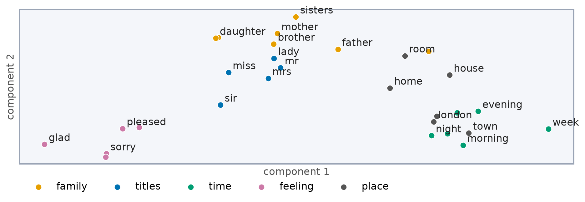
| Word | Its nearest neighbours |
|---|---|
| mother | father, sister, commendation, husband, song |
| london | town, meryton, scotland, hertfordshire, militia |
| mr | collins, miss, wickham, steward, darcy |
| morning | day, saturday, next, third, arrival |
| money | knows, exertion, respect, done, pardon |
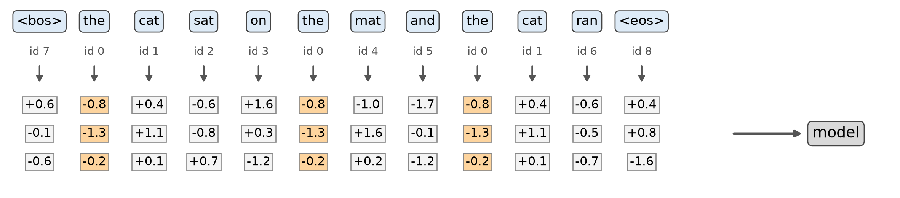
“bank”
One vector
Making a word’s vector depend on its context is where the next lecture, and then attention, go
An embedding layer turns ids into vectors, and word2vec trains them so that words used in similar company end up close.
| Vector size | Similar words close? | Built by | |
|---|---|---|---|
| One-hot | vocabulary size | No: all equally far | By hand |
| Bag of words | vocabulary size | No, and word order is lost | By counting |
| Embedding inside a task | d, small | Only as far as the task needs | Training on the task’s loss |
| word2vec | d, small | Yes, for words used in similar company | Training on neighbours |
<unk>, <pad>, <bos>, <eos>) cover the unknown, padding and the endsCST463 · Advanced Machine Learning